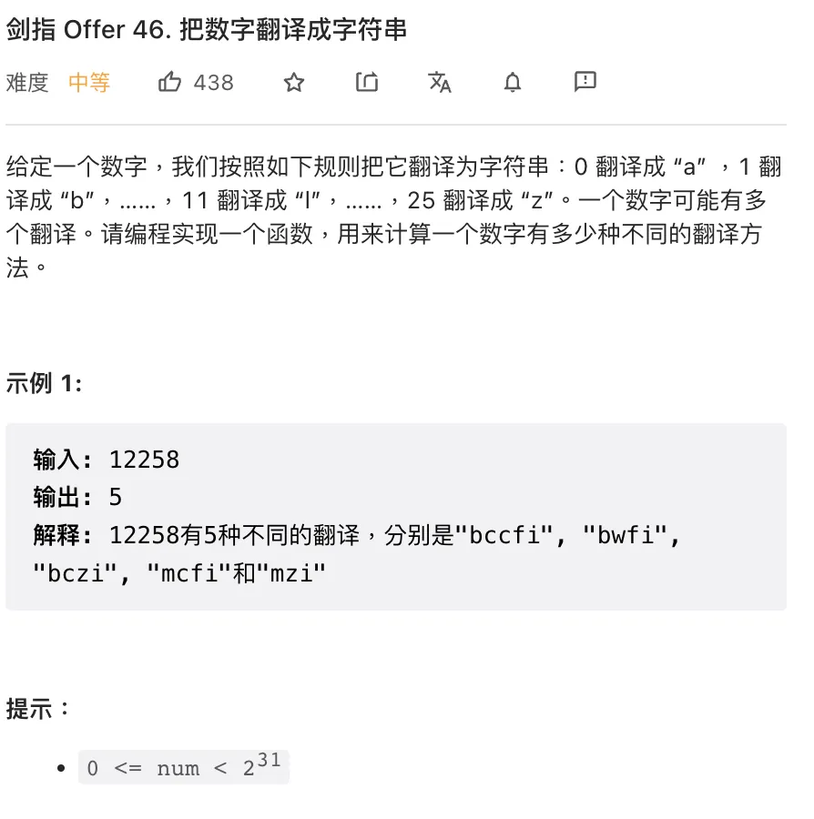

剑指 Offer 46. 把数字翻译成字符串
Question

先自己想想看 🤔Try it yourself first 🤔
✍🏽 My Solution
Solution #1 [王爭-爬樓梯]
执行用时：0 ms, 在所有 Java 提交中击败了100.00%的用户
内存消耗：38.2 MB, 在所有 Java 提交中击败了49.55%的用户
class Solution {
public int translateNum(int num) {
if (num <= 9) return 1;
// 把十进制数转化成数字数组
List<Integer> digitlist = new ArrayList<>();
while (num != 0) {
digitlist.add(num % 10);
num /= 10;
}
int n = digitlist.size();
int[] digits = new int[n];
for (int i = 0; i < n; i++) {
digits[i] = digitlist.get(n-i-1);
}
int[] dp = new int[n+1];
dp[0] = 1;
// dp[i] 表示digits[0~i-1]（長度為i）轉化為字母有多少種方法
// dp[i] = dp[i-1] + dp[i-2]（digits[i-2, i-1]可以翻譯
// dp[i] = dp[i-1] digits[i-2, i-1] 不可翻譯
for (int i = 1; i <= n; i++) { // 爬樓梯
dp[i] = dp[i-1];
if (i-2 >= 0 && isValid(digits[i-2], digits[i-1])) {
dp[i] += dp[i-2];
}
}
return dp[n];
}
private boolean isValid(int a, int b) {
if (a == 1) return true;
if (a == 2 && b >= 0 && b <= 5) return true;
return false;
}
}
Explanation (in my words)
- How does their solution work?
- 分割問題如果是dp問題就用爬樓梯問題
- 只要看計算一個數字需要多少種翻譯方法
- 同等爬樓梯問題
- 多個階段從1個或2個數字翻譯。
- 定義狀態：int dp[n+1]（n表示數字個數），dp[i] 表示長度為i的數字序列有多少種翻譯方法
- 到達i這個狀態，那上一步只有可能是選了1個或2個數字翻譯，也就是從狀態i-1、i-2轉化過來。dp[i]值也由dp[i-1]、dp[i-2]推導出來
- dp[i] = dp[i-1] + dp[i-2]（前提是2個數字不超過25）